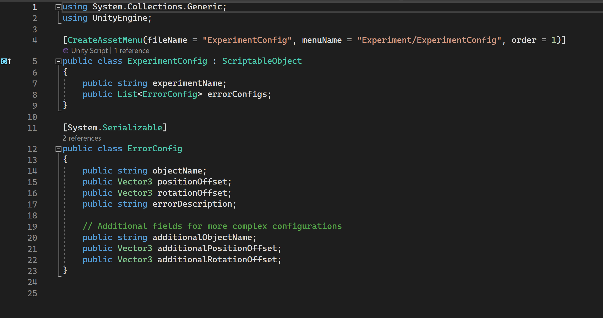

Chemistry Glassware Hazard Perception
About
This project will be embedded into a canvas course for second year Chemistry students to help them understand how to setup Distillation and Reflux experiments correctly.
Project Info
What I learnt
In this project I learnt some new skills, such as custom shaders for outlining objects and modelling glassware in blender and importing these models into unity. This is something I would like to explore more in future projects. I also gained a deeper understanding of creating managers for things such as popups, setups and the core game loop. Another feature I explored was scriptable objects to reuse a lot of code.
Code
Scriptable Objects
Created an experiment config scriptable object, allows for the reuse of the experiment manager class so that multiple glassware setups can be created quickly.